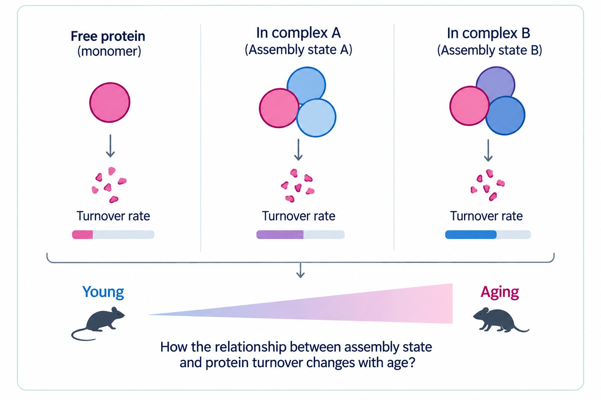

TURNOVER
Assembly states and protein lifetime
How does a protein’s assembly state shape its lifetime?
Aging is accompanied by a decline in protein quality control and degradation. Many proteins become longer-lived with age, and increased protein stability has been associated with a greater tendency to aggregate.
However, the same protein can exist in multiple assembly states: incorporated into a functional complex, free as a monomer, or interacting with alternative partners. Does the cell recognize and degrade these molecular forms differently, and does this regulation change with age?
By combining assembly-state-resolved proteomics with metabolic labeling, we study how protein assembly, post-translational modifications, and turnover are interconnected. Our goal is to uncover how these relationships maintain a healthy proteome, and how their disruption contributes to aging and neurodegeneration.
